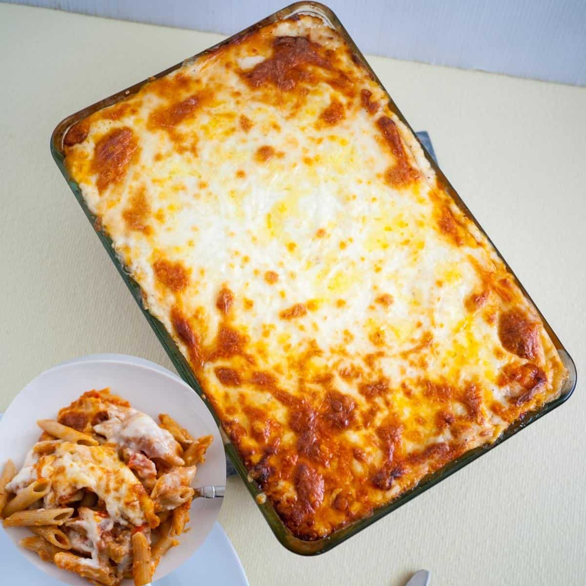

This is a recipe for Lasgana!

Description
This is a step by step recipe for lasgana! I've listed all the necessary ingredients and instructions! Have fun with it.
Ingredients
- 1 Pound Lean Ground Beef
- 1 (32 oz) Jar Spaghetti Sauce
- 32 oz Cottage Cheese
- 3 Cups Shredded Mozzarella Cheese
- 2 Eggs
- 1/2 Cups Grated Parmesan Cheese
- 2 Teaspoons Dried Parsely
- Salt to Taste
- Ground Black Pepper to Taste
- 9 Lasgana Noodles
- 1/2 Cup Water
Steps
- Preheat the oven to 350 degrees F (175 degrees C)
- Warm a large skillet over medium heat. Add ground beef and cook until browned, 8 to 10 min. Drain the grease.
Stir in spaghetti sauce and simmer for 5 min.
- Mix together cottage cheese, 2 cups of mozzarella cheese, eggs, 1/2 of the grated Parmesan cheese, dried parsley, salt,
and pepper in a large bowl.
- Spread 3/4 cup of sauce in a 9x13-inch baking dish. Cover with 3 uncooked lasagna noodles, 1 3/4 cups of cheese mixture,
and 1/4 cup sauce; repeat layers once more. Top with remaining 3 noodles, sauce, mozzarella, and Parmesan cheese.
Add 1/2 cup water along the edges of the dish. Cover tightly with aluminum foil.
- Bake in the preheated oven for 45 minutes. Uncover and bake for an additional 10 minutes. Let stand 10 minutes before serving.